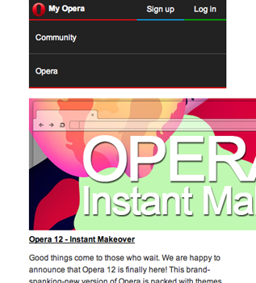

Building for the
Modern Web
with RWD & Web Components
Eric Bollens / eric@eb.io / ebollens [GitHub] / @ericbollens [Twitter]
Before We Start...
About This Presentation
The slides from this presentation
eb.io/ghp/p-building-modern-web
This presentation is open source
github.com/ebollens/p-building-modern-web
About Me
Chief Technology Officer

Formerly,
Open Source Architect

Open source, modern web & IoT evangelist
What Is The Modern Web?
Expressive semantics
Human and machine comprehensible
Responsive to user needs
Interfaces for a rich browsing ecosystem
Rich interface components
Reusable and extensible functionality
Expressive Semantics
<body>
<header><!-- .. --></header>
<main>
<article>
<header><!-- .. --></header>
<footer><!-- .. --></footer>
<main><!-- .. --></main>
</article>
</main>
<footer><!-- .. --></footer>
</body>Responsive to user needs
<div class="row">
<div class="col-xs-12 col-sm-6">
<!-- .. -->
</div>
<div class="clearfix visible-xs-block"></div>
<div class="col-xs-6 col-sm-3">
<!-- .. -->
</div>
<div class="col-xs-6 col-sm-3">
<!-- .. -->
</div>
</div>Rich interface components
<ol is="responsive-gallery">
<li>
<figure is="youtube-video-popup" data-id="XXXXXXXXX">
<figcaption><!-- .. --></figcaption>
</figure>
</li>
<li>
<figure is="youtube-video-popup" data-id="XXXXXXXXX">
<figcaption><!-- .. --></figcaption>
</figure>
</li>
<!-- .. -->
</ol>Responsive Design
The Web is Flexible
The control which designers know in the print medium... is simply a function of the limitation of the printed page.
We should embrace the fact that the web doesn't have the same constraints, and design for this flexibility.
~ John Allsopp, A Dao of Web Design
Why Do We Care?
First there was desktop...
then there was mobile...
and now watches, widescreens, etc.
Each device has different dimensions and capabilities
Fully-capable browsers have become pervasive
Changing perceptions regarding how mobile is used
Responsive Layouts
 |
 |
 |
Flexible Grid
target ÷ context = result
|
body > header, body > footer,
body > #container {
width: 93.75%; /* 960 ÷ 1024 = .9375 */
margin: 0 auto;
}
#container > nav {
float: left;
width: 18.75%; /* 180 ÷ 960 = .1875 */
}
#container > main {
margin-left: 19.791667%;
/* 190 ÷ 960 = .1979166.. */
width: 80.208333%;
/* 770 ÷ 960 = .8020833.. */
}
|
Breaking the Flexible Grid
Still has limits
Small screen
constricts content
Large screen
isolates content
Media Queries
|
@media (max-width: 640px){ #container > nav { float: none; width: 100%; } #container > main { margin-left: 0; width: 100%; } } |
Flexible Media
Images and video have explicit pixel sizes
|  |
img { max-width: 100%; }img, embed, object, video { max-width: 100%; }Viewport Tag
Mobile browsers assume desktop pages
but the viewport tag lets us specify otherwise
<meta name="viewport" content="width=device-width,initial-scale=1">Recap
Flexible Grid
Proportional design with percentages, not pixels
Media Queries
Application of styles at particular dimensions
Responsive Media
Images and video that scale to fit their container
Viewport Definition
Specify dimensions for the viewport
More Than Basic Responsive Layouts
Media Queries
Most commonly...
@media (max-width: 480px) { /* ... */ }But often more effective...
@media (min-width: 481px) { /* ... */ }For high resolution displays...
@media (min-resolution: 300dpi) { /* ... */ }And more Media Queries
@media (max-width: 480px) { /* ... */ }
@media (min-width: 481px) { /* ... */ }
@media (max-resolution: 299dpi) { /* ... */ }
@media (min-resolution: 300dpi) { /* ... */ }
@media (max-height: 800p1px) { /* ... */ }
@media (min-height: 800px) { /* ... */ }
@media (max-aspect-ratio: 1/1) { /* ... */ }
@media (orientation: portrait) { /* ... */ }
@media (min-aspect-ratio: 1/1) { /* ... */ }
@media (orientation: landscape) { /* ... */ }
@media (light-level: normal) { /* ... */ }
@media (light-level: dim) { /* ... */ }
@media (light-level: washed) { /* ... */ }
@media (pointer: fine) { /* ... */ }
@media (hover: hover) { /* ... */ }
@media (scripting: enabled) { /* ... */ }
@supports
@supports (display: flex) {
div { display: flex; }
}@supports (-webkit-box-shadow: 0 0 2px #000) or
( -moz-box-shadow: 0 0 2px #000) or
( box-shadow: 0 0 2px #000) {
div { /* .. */ }
}CSS.supports("display", "flex");CSS.supports("(transform-origin: 5% 5%)");CSS.supports("(transform-origin: 5% 5%) and (display:flex)");All current browsers except IE
(polyfill: github.com/kjarmicki/fq-polyfill)
Using ems for Breakpoints
@media (min-width: 641px) { /* ... */ }for windows or screens of particular width ranges,
we want to flow our content in a particular way
But is this the right approach?
What happens when the baseline is not 14pt/16px?
@media (min-width: 40.0625em) { /* ... */ }
Identical behavior for default text size
Friendly to assisted users who scale text size up
Support high density devices that report larger pixel sizes
Responsive Interactions
How Do You Scroll?
Spin a scroll wheel
Drag a scroll bar
Press a scroll arrow
Slide a finger across the screen
Verbally state "scroll" and a direction
How Do You Undo?
CTRL + Z
CMD + Z
Press down and select action
Shake or swipe
Handling for Many Environments
document.addEventListener('keydown', function(e){
if(navigator.userAgent.match(/Macintosh/g) && e.which === 90 && e.metaKey)
doUndo();
else if(e.which === 90 && e.ctrlKey)
doUndo();
});
if(navigator.userAgent.match(/(iPad|iPhone|iPod)/g))
window.addEventListener('shake', function(e){
doUndo();
});
(function (window, document) {
function Shake() {
this.hasDeviceMotion = 'ondevicemotion' in window;
this.threshold = 15;
this.lastTime = new Date();
this.lastX = null;
this.lastY = null;
this.lastZ = null;
if (typeof document.CustomEvent === "function") {
this.event = new document.CustomEvent('shake', {
bubbles: true,
cancelable: true
});
} else if (typeof document.createEvent === "function") {
this.event = document.createEvent('Event');
this.event.initEvent('shake', true, true);
} else {
return false;
}
}
Shake.prototype.reset = function () {
this.lastTime = new Date();
this.lastX = null;
this.lastY = null;
this.lastZ = null;
};
Shake.prototype.start = function () {
this.reset();
if (this.hasDeviceMotion) { window.addEventListener('devicemotion', this, false); }
};
Shake.prototype.stop = function () {
if (this.hasDeviceMotion) { window.removeEventListener('devicemotion', this, false); }
this.reset();
};
Shake.prototype.devicemotion = function (e) {
var current = e.accelerationIncludingGravity,
currentTime,
timeDifference,
deltaX = 0,
deltaY = 0,
deltaZ = 0;
if ((this.lastX === null) && (this.lastY === null) && (this.lastZ === null)) {
this.lastX = current.x;
this.lastY = current.y;
this.lastZ = current.z;
return;
}
deltaX = Math.abs(this.lastX - current.x);
deltaY = Math.abs(this.lastY - current.y);
deltaZ = Math.abs(this.lastZ - current.z);
if (((deltaX > this.threshold) && (deltaY > this.threshold)) || ((deltaX > this.threshold) && (deltaZ > this.threshold)) || ((deltaY > this.threshold) && (deltaZ > this.threshold))) {
//calculate time in milliseconds since last shake registered
currentTime = new Date();
timeDifference = currentTime.getTime() - this.lastTime.getTime();
if (timeDifference > 1000) {
window.dispatchEvent(this.event);
this.lastTime = new Date();
}
}
this.lastX = current.x;
this.lastY = current.y;
this.lastZ = current.z;
};
Shake.prototype.handleEvent = function (e) {
if (typeof (this[e.type]) === 'function') {
return this[e.type](e);
}
};
var myShakeEvent = new Shake();
myShakeEvent && myShakeEvent.start();
}(window, document));
And how about tap highlight undo?
IndieUI
Make it easier for web developers to author consistently usable interfaces that are input-agnostic and independent of a user's particular platform, hardware, locale & preferences.
Enable every type of control in these interfaces to be programmatically determinable and controllable by both mainstream and alternate forms of user input, including assistive technologies.
Provide a clear path for web developers to transition from current physical events to IndieUI events, during the period when implementations of IndieUI are incomplete.
UndoRequest
element.addEventListener('undorequest', function(){
doUndo();
});
No keypress detection
No UA sniffing or OS consideration
No complex hacks to detect interaction
No undetectable actions
The Twist
Unfortunately, IndieUI is not really supported yet
For now, just be congnizant of the variety...
Not everyone has hover state
Not everyone interacts with keypresses
Mouse events and touch events are different
Responsive to the Environment
Ambient Light
Adapt to the luminosity of the environment
@media (light-level: normal){ body { background-color: #ddd; color: #333; } }
@media (light-level: dim) { body { background-color: #000; color: #ddd; } }Change simulation or game conditions based on environment
window.addEventListener('devicelight', function(e) {
/** change environment based on e.value from [0,100] **/
});
Even adjust for the health of your user
Currently moving through the standards process
Battery Life
Battery Status API
navigator.battery || navigator.webkitBattery || navigator.mozBattery
Properties for charging, current level and discharge time
Events when properties change
Why do we care?
Minimize the frequency of radio wakes
Adjust colors to minimize battery drain
Network Information API
(that wasn't)
Proposal for an API with bandwidth and metered properties
var i = document.getElementById('ex'), connection = document.connection;
if (connection.bandwidth > 2 && !connection.metered) {
i.src = "/ex_hd.png";
} else {
i.src = "/ex_ld.png";
}But this didn't come to pass...
Network Sampling
Navigation Timing API ( performanceTiming interface )

More Performance Sampling
Resource Timing API ( performanceTiming interface )
window.performance.getEntriesByType("resource")[5]User Timing API
performance.nowperformance.mark("startTask1"); someTaskToMeasure(); performance.mark("endTask1"); var perfEntries = performance.getEntriesByType("mark");
Storage Availability
Web Storage, App Cache, FileSystem API & Indexed Database
Quota Management API
navigator.storageQuota.queryInfo("temporary").then(function(storageInfo) { initializeCache(storageInfo.usage, storageInfo.quota - storageInfo.usage); });
navigator.storageQuota.queryInfo("persistent").then(function(storageInfo){ var availableSpace = storageInfo.quota - storageInfo.usage; if (availableSpace >= spaceNeeded) return storageInfo; else return navigator.storageQuota.requestPersistentQuota( spaceNeeded + storageInfo.usage); } ).then(function (storageInfo) { prepareForOfflineMode(storageInfo.quota - storageInfo.usage); }, errback)
Web Components
The Original Vision for HTML
Originally, just text and links
Support added for images and media
Becomes a publishing and marketing medium
By the late 1990's, the web was no longer optional
From Information to Interaction
DotCom era bore a new generation of web tech
eCommerce
Social networks
Blogs, wikis and podcasts
Streaming services
Boom turned to bust, but "Web 2.0" remained
Rich Internet Applications
Web-oriented Architecture
Social Web
Keeping Up with the Changing Model
HTML suffers from its success
Divitis
XHTML, DHTML, ActiveX, Java
JavaScript Mega-Frameworks
Flash & Silverlight
HTML 5
Structural semantics
Interactive features
A larger feature set... but still a discrete one
Beyond Discrete Semantics
Semantics should be
Domain-applicable
Expressive
Encapsulated
Reusable
Composable
Extensible
Web Components
Custom Elements
define new HTML tags
HTML Templates
inject dynamic content into static markup structures
Shadow DOM
scope markup and styles in a separate DOM tree
HTML Imports
import HTML documents into other HTML documents
Custom Elements
Basics
Register a custom element
var XFoo = document.registerElement('x-foo');Use within the DOM
<x-foo></x-foo>Instantiate the element
document.body.appendChild(new XFoo());More About Registration
var XFoo = document.registerElement('x-foo');var XFoo = document.registerElement('x-foo', {
prototype: Object.create(HTMLElement.prototype)
});var XFooProto = Object.create(HTMLElement.prototype);
// ..
var XFoo = document.registerElement('x-foo', {
prototype: XFooProto
});Extending an Element
var MegaButton = document.registerElement('mega-button', {
prototype: Object.create(HTMLButtonElement.prototype),
extends: 'button'
});Attributes, methods and callbacks inherited from button
<button is="mega-button">var megaButton = document.createElement('button', 'mega-button');[is="mega-button"] { font-size: 2em; }For Convinience, Setters & Getters
var XFooProto = Object.create(HTMLElement.prototype);
XFooProto.foo = function() { alert('foo() called'); };
XFooProto.bar = 5;
var XFoo = document.registerElement('x-foo', {
prototype: XFooProto
});var XFoo = document.registerElement('x-foo', {
prototype: Object.create(HTMLElement.prototype, {
foo: {
value: function() { alert('foo() called'); }
},
bar: {
get: function() { return 5; }
}
})
});
Custom Element Lifecycle
createdCallback
when instance of element is created
attachedCallback
when an instance is inserted into the document
detachedCallback
when an instance is removed from the document
attributeChangedCallback(attrName, oldVal, newVal)
when an attribute is added, removed or updated
Putting Custom Elements to Work
A Motivating Example
Data collection @ CloudCompli
Develop software for environmental compliance
Workflows driven by inspections & other data collection
Compliance isn't simple or accommodating
Need a simple definition language for complex forms
We need more than HTML forms offer out-of-the-box
Why Isn't HTML Enough?
HTML forms are flat
Hard to represent sets, sub-structures & complex data types
HTML forms are missing controls we need
Signatures, geocoding, graphical, etc.
HTML forms are weak on behavioral definitions
Conditional applicability, multi-group sets, etc.
A Comparison
The Old Way
Most forms over 1k LOC
Largest form over 3k LOC
Limited reusability
Mid-level engineer required
The New Way
Largest form less than 1k LOC
Control behaviors completely reusable
"Intern-ready"
Putting Custom Elements to Work
Latitude Input: Custom Callback
<input is="type-lat" name="latitude">var initializeInputTypeLat = function(){
var self = this;
self.type = 'number';
self.min = -90;
self.max = 90;
self.step = 'any';
navigator.geolocation.getCurrentPosition(function(position){
self.value = position.coords.latitude;
});
}document.registerElement('type-lat', {
extends: 'input',
prototype: Object.create(HTMLInputElement.prototype, {
attachedCallback: {
value: initializeInputTypeLat
}
})
});Nested Data
<form is="hierarchical-form" action="/report" method="POST">
<input type="text" name="title">
<fieldset is="control-group" data-name="location">
<legend>Location</legend>
<input is="type-lat" name="latitude">
<input is="type-lng" name="longitude">
</fieldset>
<input type="submit">
</form>{
"title": "Example",
"location": {
"latitude": "34.068077",
"longitude": "-118.442542"
}
}Control Group
<fieldset is="control-group" data-name="location">
<legend>Location</legend>
<input is="type-lat" name="latitude">
<input is="type-lng" name="longitude">
</fieldset>group.value == {
"latitude": "34.068077",
"longitude": "-118.442542"
}
control-group as a meta-field
It's value should be an object of sub-fields
It's name should be used for form data or in a parent group
Control Group: Name
data-name attribute for fieldset name
document.registerElement('control-group', {
extends: 'fieldset',
prototype: Object.create(HTMLFieldSetElement.prototype, {
name: {
get: function(){
return $(this).attr('data-name');
},
set: function(value){
$(this).attr('data-name', value);
}
},
/* .. */
})
});Control Group: Value Getter
document.registerElement('control-group', {
extends: 'fieldset',
prototype: Object.create(HTMLFieldSetElement.prototype, {
/* .. */
value: {
get: getValueForControlGroup
}
})
});var getValueForControlGroup = function(){
var values = {}, name;
$(this).find(processableSelector)
.not($(this).find(exclusionSelector))
.each(function(){
if(name = $(this).attr('name') && this.value !== undefined){
values[name] = this.value;
}
});
return values;
}Control Group: Value Setter
document.registerElement('control-group', {
extends: 'fieldset',
prototype: Object.create(HTMLFieldSetElement.prototype, {
/* .. */
value: {
get: getValueForControlGroup,
set: setValueForControlGroup
}
})
});var setValueForControlGroup = function(){
$(this).find(processableSelector)
.not($(this).find(exclusionSelector))
.each(function(){
var name = this.name;
if(value[name])
this.value = value[name]
});
}
Form: Values
form.value == {
"title": "Example",
"location": {
"latitude": "34.068077",
"longitude": "-118.442542"
} }form.value = {
"some-group": {
"some-field": "some value"
} }document.registerElement('hierarchical-form', {
extends: 'form',
prototype: Object.create(HTMLFormElement.prototype, {
value: {
get: getValueForControlGroup,
set: setValueForControlGroup
}
})
});Form: Submission
<form is="hierarchical-form" action="server/submit.php" method="POST"
data-success="server/success.php" data-error="server/error.php">document.registerElement('hierarchical-form', {
extends: 'form',
prototype: Object.create(HTMLFormElement.prototype, {
attachedCallback: {
value: function(){ overrideFormSubmitHandler(this); }
} }) });var overrideFormSubmitHandler = function(form){
$(form).submit(function(e){ e.preventDefault();
$.ajax({ url: $(form).attr('action'),
method: $(form).attr('method'),
data: JSON.stringify(form.value),
contentType: 'application/json; charset=utf-8',
success: function(){
window.location = $(form).attr('data-success'); },
error: function(){
window.location = $(form).attr('data-error'); }
}) }) };Getting Organized
Quickly Becoming a Mess
(function(){
var processableFields = [
'input',
'textarea',
'select',
'fieldset[is="control-group"]'
],
processableSelector = processableFields.join(', '),
exclusionSelector = processableFields
.map(function(f){
return 'fieldset[is="control-group"] '+f;
}).join(', ');
var HierarchicalGroupValueProperties = {
value: {
get: function(){
var values = {}
$(this).find(processableSelector)
.not($(this).find(exclusionSelector))
.each(function(){
var name = this.name;
if(name && this.value !== undefined){
values[name] = this.value;
}
});
return values;
},
set: function(value){
$(this).find(processableSelector)
.not($(this).find(exclusionSelector))
.each(function(){
var name = this.name;
if(value[name])
this.value = value[name]
});
}
}
}
window.HierarchicalFormElement = document.registerElement(
'hierarchical-form', {
extends: 'form',
prototype: Object.create(HTMLFormElement.prototype,
$.extend({}, HierarchicalGroupValueProperties, {
attachedCallback: {
value: function(){
var form = this;
$(this).submit(function(e){
e.preventDefault();
$.ajax({
url: $(form).attr('action')
? $(form).attr('action')
: '#',
method: $(form).attr('method')
? $(form).attr('method')
: 'GET',
data: JSON.stringify(form.value),
contentType:
'application/json; charset=utf-8',
success: function(){
if($(form).attr('data-success'))
window.location =
$(form).attr('data-success');
},
error: function(){
console.log(arguments)
if($(form).attr('data-error'))
window.location =
$(form).attr('data-error');
}
})
})
}
}
}))
});
window.ControlGroupElement = document.registerElement(
'control-group', {
extends: 'fieldset',
prototype: Object.create(HTMLFieldSetElement.prototype,
$.extend({}, HierarchicalGroupValueProperties, {
name: {
get: function(){
return $(this).attr('data-name');
},
set: function(value){
$(this).attr('data-name', value);
}
}
}))
});
window.InputTypeLatElement = document.registerElement(
'type-lat', {
extends: 'input',
prototype: Object.create(HTMLInputElement.prototype, {
attachedCallback: {
value: function(){
var self = this;
self.type = 'number';
self.min = -90;
self.max = 90;
self.step = 'any';
navigator.geolocation.getCurrentPosition(
function(position){
self.value = position.coords.latitude;
});
}
}
})
});
window.InputTypeLngElement = document.registerElement(
'type-lng', {
extends: 'input',
prototype: Object.create(HTMLInputElement.prototype, {
attachedCallback: {
value: function(){
var self = this;
self.type = 'number';
self.min = -180;
self.max = 180;
self.step = 'any';
navigator.geolocation.getCurrentPosition(
function(position){
self.value = position.coords.longitude;
});
}
}
})
});
})()Partial Loading
Great for resources
<script src>
<link rel="stylesheet" href>
<img> , <video> and <img>
<embed> and <object>
But historically bad for HTML
AJAX
<iframe>
Hacks (overloading <script>, hiding in comments, etc.)
HTML Imports
<link rel='import' href='elements/fieldset_control-group.html'><script type='text/javascript' src="../libraries/jquery.js"></script>
<script type='text/javascript'>
document.registerElement('control-group', {
/* .. */
});
</script>Support for recursion
<link rel='import' href='elements.html'><link rel='import' href='elements/form_hierarchical-form.html'>
<link rel='import' href='elements/fieldset_control-group.html'>
<link rel='import' href='elements/input_type-lat.html'>
<link rel='import' href='elements/input_type-lng.html'>Namespace Chaos
Multiple elements may need the same routines
var HierarchicalGroupValue = (function(){
var processableFields = [
'input',
'textarea',
'select',
'fieldset[is="control-group"]'
],
processableSelector = processableFields.join(', '),
exclusionSelector = processableFields
.map(function(f){
return 'fieldset[is="control-group"] '+f;
}).join(', ');
return {
get: function(){
var values = {}
$(this).find(processableSelector)
.not($(this).find(exclusionSelector))
.each(function(){
var name = this.name;
if(name && this.value !== undefined){
values[name] = this.value;
}
});
return values;
},
set: function(){
$(this).find(processableSelector)
.not($(this).find(exclusionSelector))
.each(function(){
var name = this.name;
if(value[name])
this.value = value[name]
});
}
};
})();ES6 Modules
import { get } from 'hierarchicalGroupValue';
get.call(element)import * from 'hierarchicalGroupValue';
hierarchicalGroupValue.get.call(element)import * from 'hierarchicalGroupValue';
document.registerElement('control-group', {
extends: 'form',
prototype: Object.create(HTMLFieldSetElement.prototype, {
value: hierarchicalGroupValue,
attachedCallback: { /* .. */ }
}) });ES6 Module Loader
System.import('helpers/hierarchical-group-value').then(function(hgv){
document.registerElement('hierarchical-form', {
extends: 'form',
prototype: Object.create(HTMLFormElement.prototype, {
value: hgv,
/* .. */
})
});
});
Multiple ES6 Modules
Promise.all([
'helpers/hierarchical-group-value', 'helpers/data-name'
].map(function(m){ return System.import(m) })).then(function(m) {
var hierarchicalGroupValue = m[0],
dataName = m[1];
document.registerElement('control-group', {
extends: 'fieldset',
prototype: Object.create(HTMLFieldSetElement.prototype, {
value: hierarchicalGroupValue,
name: dataName
})
});
});Templates & Shadow DOM
Multiple Group Control
Multiple sets of the same group of controls
and the ability to add more sets
<fieldset is='multi-group-control' data-name='issues'>
<legend>Issues</legend>
<fieldset is="control-group">
<input type='text' name='identifier'>
<textarea name='description'></textarea>
</fieldset>
<fieldset is="control-group">
<input type='text' name='identifier'>
<textarea name='description'></textarea>
</fieldset>
<!-- .. -->
<button>+</button>
</fieldset>Scaffolding the Control
Let's implement a Web Component for this where...
you define a template for the group
<fieldset is='multi-group-control' data-name='issues'>
<legend>Issues</legend>
<template>
<input type='text' name='identifier'>
<textarea name='description'></textarea>
</template>
</fieldset>the value is an array of the group values
[
{ "name": "..", "description": ".." },
{ "name": "..", "description": ".." }
]Template Element
Inert until activated
Markup is hidden and doesn't render until activated
No side-effects
Scripts don't run and media isn't retrieved until activated
Not in DOM tree
Not selectable by usual DOM methods
May be placed anywhere in head, body or frameset
Using Template for Delayed Activation
<button onclick="example()">Use me</button>
<div id="container"></div><template>
<div>Template used: <span>0</span></div>
<script>alert('Foobar!')</script>
</template>
function example() {
var content = document.querySelector('template').content,
span = content.querySelector('span');
span.textContent = parseInt(span.textContent) + 1;
document.querySelector('#container')
.appendChild(document.importNode(content, true));
}Generating the Meta-Control
<fieldset is='multi-group-control' data-name='issues'>
<legend>Issues</legend>
<template>
<input type='text' name='identifier'>
<textarea name='description'></textarea>
</template>
</fieldset>attachedCallback: {
value: function(){
var control = this;
this.template = $(this).children('template').get()[0];
this.container = document.createElement('div');
$(this).append(this.container);
this.$button = $('<button>').attr('type', 'button')
.text('+')
.click(function(){
control.addControlGroup();
})
.appendTo(this);
}
}Generating a Control Group
<fieldset is='multi-group-control' data-name='issues'>
<legend>Issues</legend>
<template>
<input type='text' name='identifier'>
<textarea name='description'></textarea>
</template>
</fieldset>addControlGroup: {
value: function(value){
var clone = document.importNode(this.template.content, true),
$newGroup = $('<fieldset is="control-group">');
$newGroup.append(clone);
$(this.container).append($newGroup);
if(value !== undefined)
$newGroup.get()[0].value = value;
}
}The Meta-Group's Getter & Setter
[
{ "name": "..", "description": ".." },
{ "name": "..", "description": ".." }
]get: function(){
var groups = [];
$(this.container).children().each(function(){
groups.push(this.value);
});
return groups;
}set: function(values){
values.forEach(function(value){
this.addControlGroup(value);
}, this);
}Leaky Implementation Details
What about namespace clashes?
If we use a class in our widget, external definitions might leak in
When building and using widgets, we want to...
Encapsulate implementation details
Isolate from exterior styles and behaviors
We need to isolate the widget's DOM tree
Shadow DOM
this.container = document.createElement('div');
$(this).append(this.container);var shadowContainer = document.createElement('div'),
shadow = shadowContainer.createShadowRoot();
this.container = shadow;
$(this).append(shadowContainer);
<div>
#shadow-root
<fieldset is="control-group"><!-- .. --></fieldset>
<!-- .. -->
</div>Styling Shadow DOM
Target the host of the shadow
:host(:hover) { /* .. */ }
Target a descendant of the host of the shadow
:host-context(.wrapper) { /* .. */ }
Target elements within the shadow context
[is="multi-group-control"] > ::shadow > [is="control-group"] {/* .. */}Use with Caution!
Shadow DOM & template polyfills have to wrap...
Document, Window, Element, XMLHttpRequest, Node, NodeList, DOMTokenList, FormData, WebGLRenderingContext, Selection, and another 25 or so elements...
Oh, and functions like...
createElement, createEvent, getElementById, getSelection, querySelector, querySelectorAll, and another 15 or so core ones...
We love Web Components at CloudCompli, but...
we do not yet use template and Shadow DOM
Experiences from the Real World
This Stuff Isn't Easy
3 rewrites and 100 hours on our form components
But estimated savings producing forms over 10x that
Edge cases and race conditions
Event model and asynchronous loading get messy fast
Performance can be tough
You're in the DOM node initialization process
Browser bugs/inconsistencies and limited debugging
The browsers aren't doing this all right yet either
Browser Support, Polyfills and Failings
You are on the bleeding edge
But browsers are fixing bugs and adding features
Polyfills do pretty good with most of this
But pieces of it are definitely not for the feint of heart
Web Components Polyfill
github.com/WebComponents/webcomponentsjs
ES6 Modules
github.com/ModuleLoader/es6-module-loader
github.com/google/traceur-compiler
Great Promise for the Future
We've only scratched the surface
So many more features and yet unforeseen outcomes
Makes HTML future-proof
Allows us to define our own domain-specific elements
Start using Web Components today
webcomponents.org
customelements.io
component.kitchen
Some Examples
github.com/ebollens/
p-building-modern-web/tree/gh-pages/ex
Responsive Video Gallery
Responsive Layouts, Custom Elements, HTML Imports
Hierarchical Forms
Custom Elements, HTML Imports, Templates, Shadow DOM
Thank You
Any Questions?
Eric Bollens / eric@eb.io / ebollens [GitHub] / @ericbollens [Twitter]